Project Summary 📝
Love Ability Gym is not about finding love—it's
about building the capacity to love.
Through 5 core modules and a foundational
self-awareness stage, users can strengthen their
"emotional muscles" with practical tools and
exercises. The app features full bilingual support
(English & Traditional Chinese), offline-first
architecture with IndexedDB, and optional cloud sync
via Supabase.
View the live project here →
Purpose 🎯
To help people navigate intimate relationships by first learning to understand oneself—emotions, needs, and thoughts. Then learning to control emotions, calm down, and treat relationships rationally and gently. Only after understanding oneself can one truly understand another person through empathy and companionship. Ultimately, the goal is to learn how to love oneself and one's partner.
Core Modules 🧩
Module 1: Awareness 覺察
- 🔍 Emotion Scan
- 📖 Story Buster
- ⚡ Rapid Awareness
- 🔄 Attribution Shift
- 📊 Happiness Scale
- ⏳ Time Travel
Module 2: Expression 表達
- 📝 Draft Builder
- 🔤 Vocabulary Swap
- 🤝 Apology Builder
Module 3: Empathy 共情
- 😡 Anger Decoder
- 👂 Deep Listening Lab
- 🔄 Perspective Switcher
- 📡 The Radar
Module 4: Allowing 允許
- 🎫 Permission Slip
- 🖼️ Reframing Tool
Module 5: Influence 影響
- 🌟 Spotlight Journal
- 💊 Time Capsule
- 🎯 Vision Board
Special: L3 Uplink ❤️
- 🪞 The Mirror — Situational diagnosis
- 📒 The Ledger — Give vs Take analysis
- ⚓ The Anchor — Breathing regulation
- 📡 The Radar — Observe → Hypothesis → Test
Stage 1: Self-Awareness 出廠設定
Assessment Pipeline
- 🎯 DISC Assessment — Communication pacing & focus
- 💎 Core Values — Hierarchy of Love & life pillar allocations
- 🧬 Attachment & Origin — Childhood atmospheres & defense mechanisms
- 🏆 Boss Level: Happiness Questionnaire — Relationship X-Ray
Interactive UI
- 👆 Swipe cards, tag clouds, zero-sum sliders
- 📳 Haptic feedback
- 🔄 State rollback with undo stack
- 🧠 Data fusion & contradiction detection
App Gallery 📸
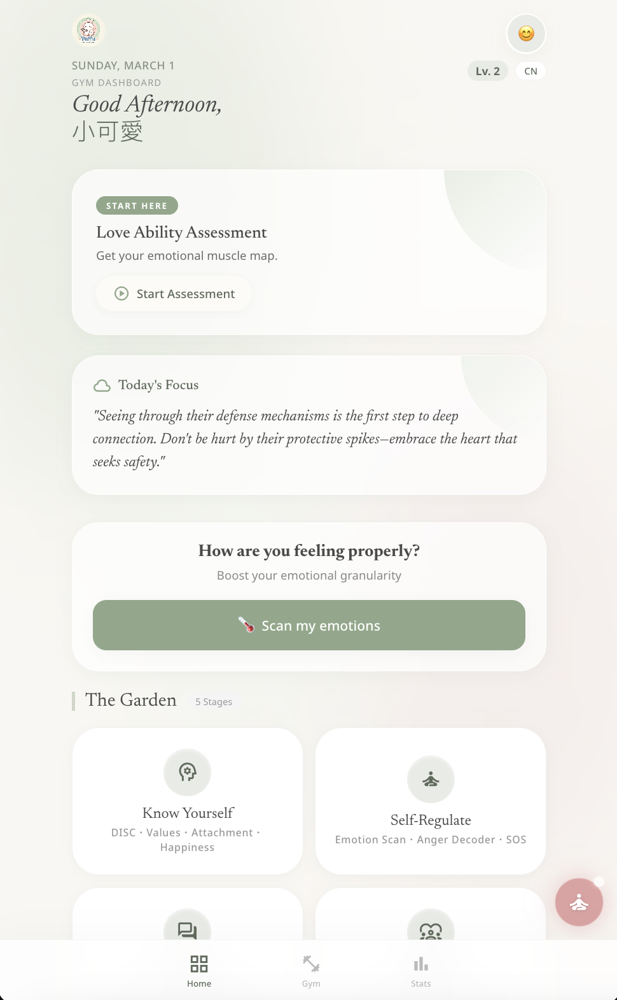
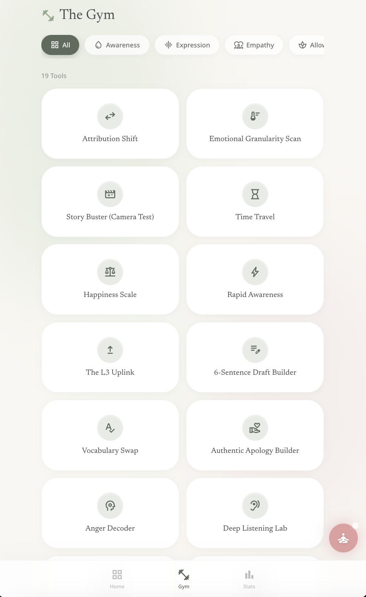
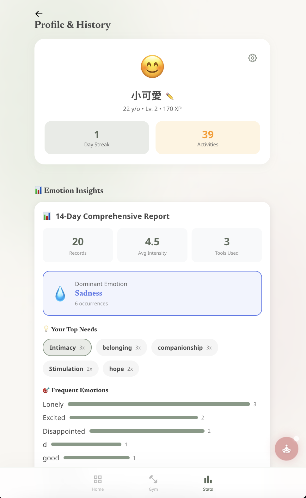
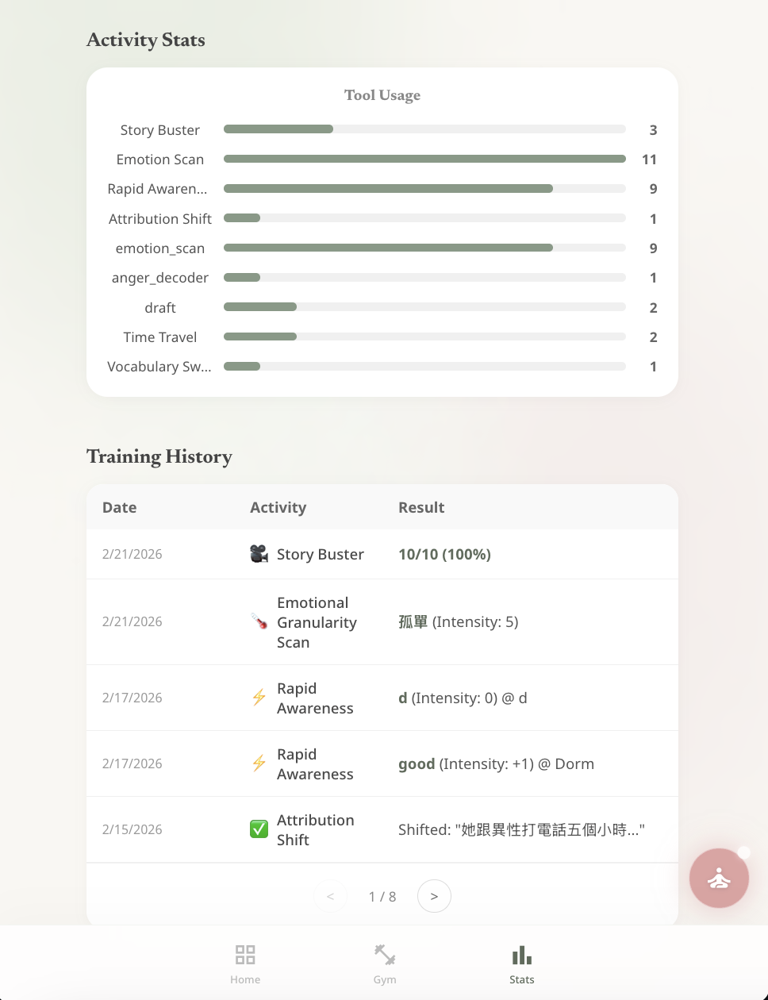
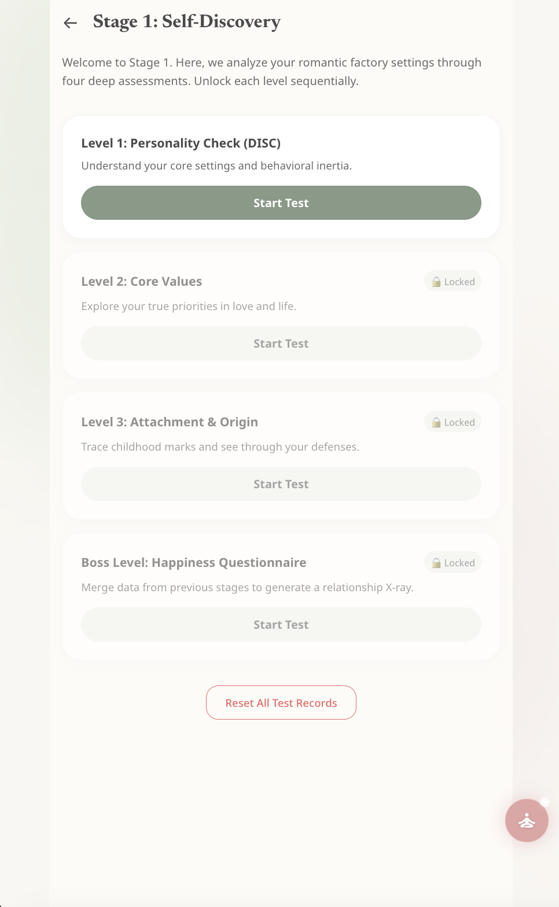
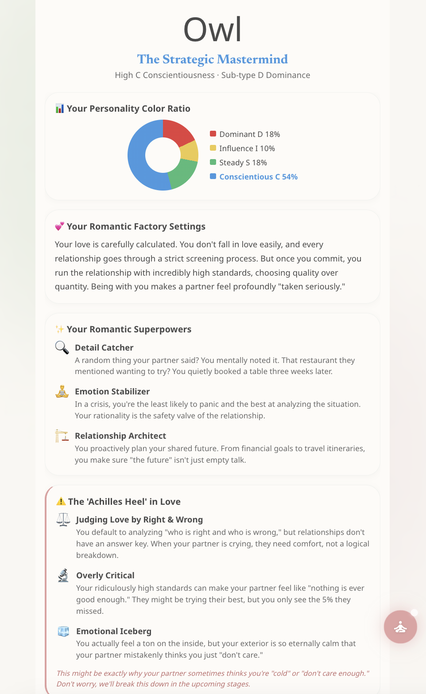
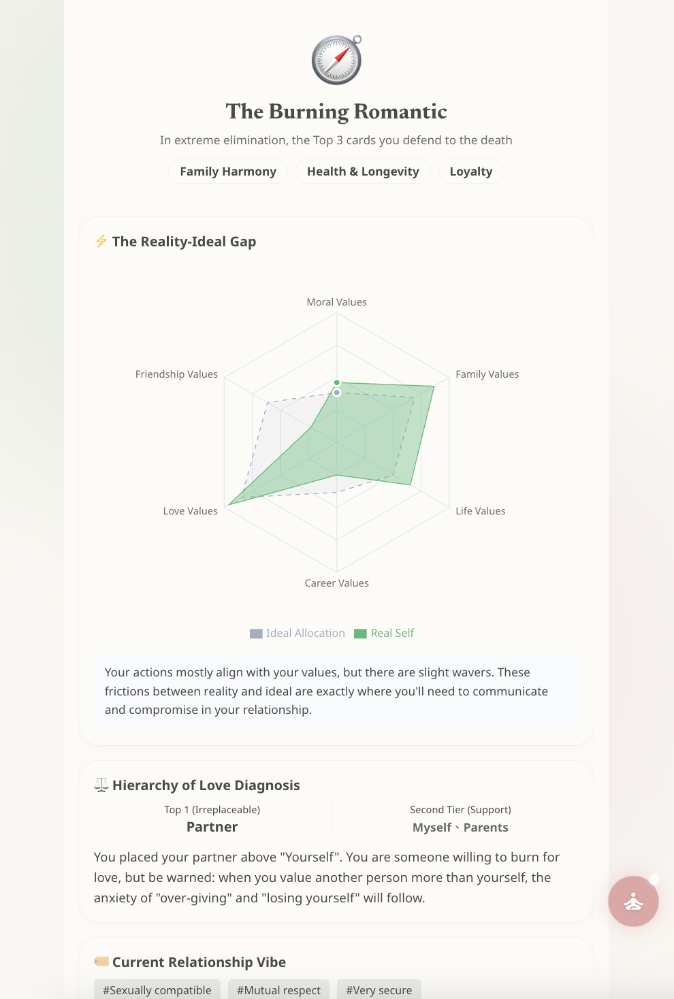
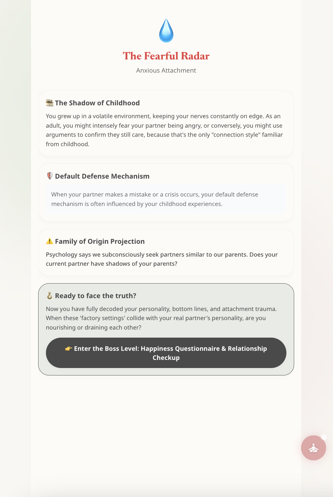
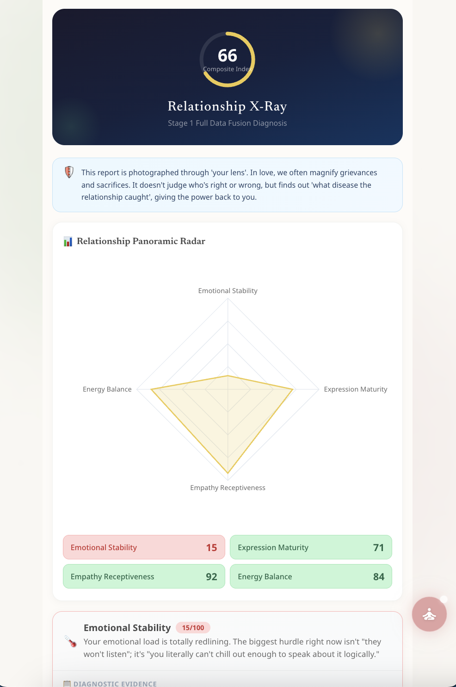
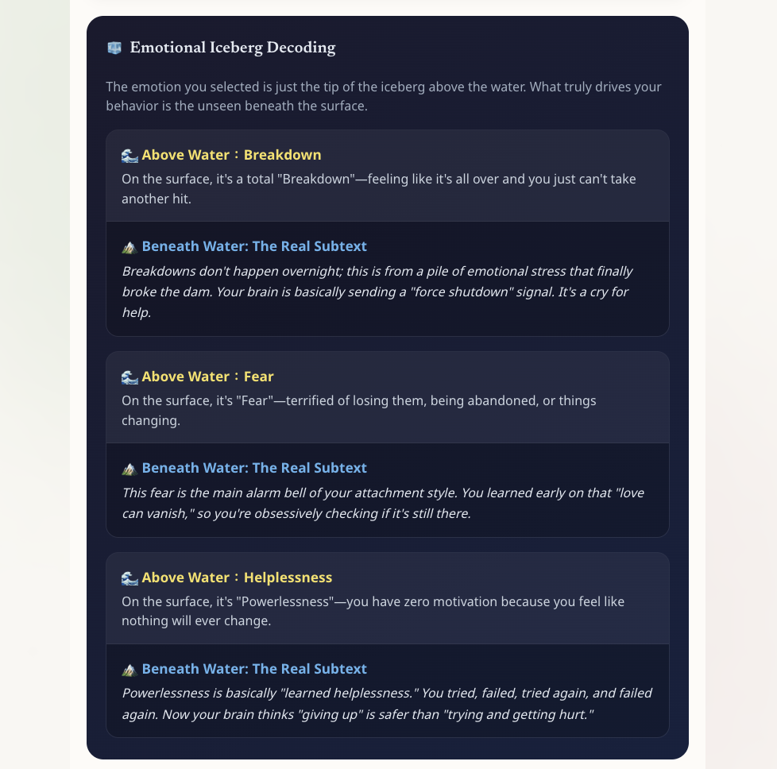
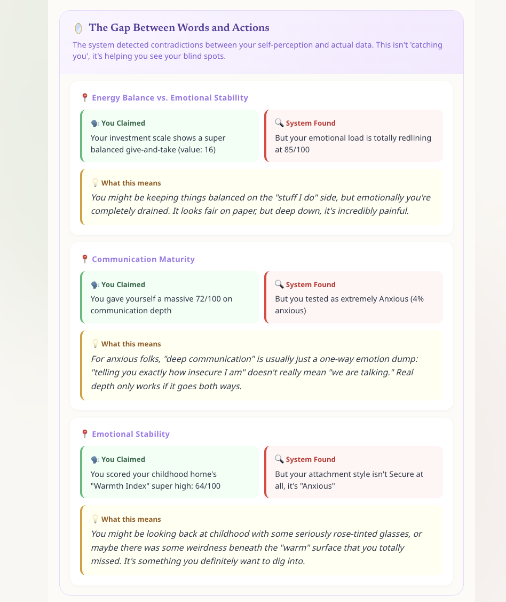
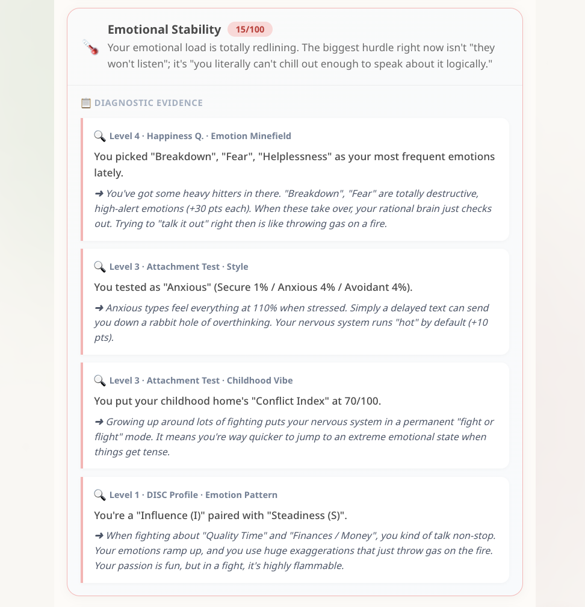
Features ✨
Core Capabilities ⚙️
- 🌐 Full bilingual support (EN / 繁體中文)
- ☁️ Optional cloud sync with delta sync & LWW conflict resolution
- 💾 IndexedDB primary storage with localStorage fallback
- 📲 PWA ready — installable as native app
- 📊 XP system & progress tracking
User Experience 🎨
- 🎬 Smooth Framer Motion animations & page transitions
- ♿ Accessible — ARIA labels, keyboard nav, screen reader support
- 🆘 Crisis Mode — Quick-access breathing exercises
- 🎓 Educational tool intros (What/Purpose/Why)
- 🔔 Smart toast notifications for feedback & rewards
Technology Stack 💻
- React 19
- Vite
- CSS Modules
- Framer Motion
- Zustand
- IndexedDB
- Supabase
- Vitest
- PWA
Architecture Highlights 🏗️
Offline-First CSR SPA
- Client-Side Rendered with React 19 + Vite 6
- IndexedDB as primary source of truth
- Custom delta sync engine with LWW resolution
- Hybrid storage: IndexedDB + in-memory cache + localStorage
State & Testing
- React Context for cross-cutting concerns
- Zustand + persist middleware for complex flows
- Vitest + React Testing Library + fake-indexeddb
- Service Worker via vite-plugin-pwa